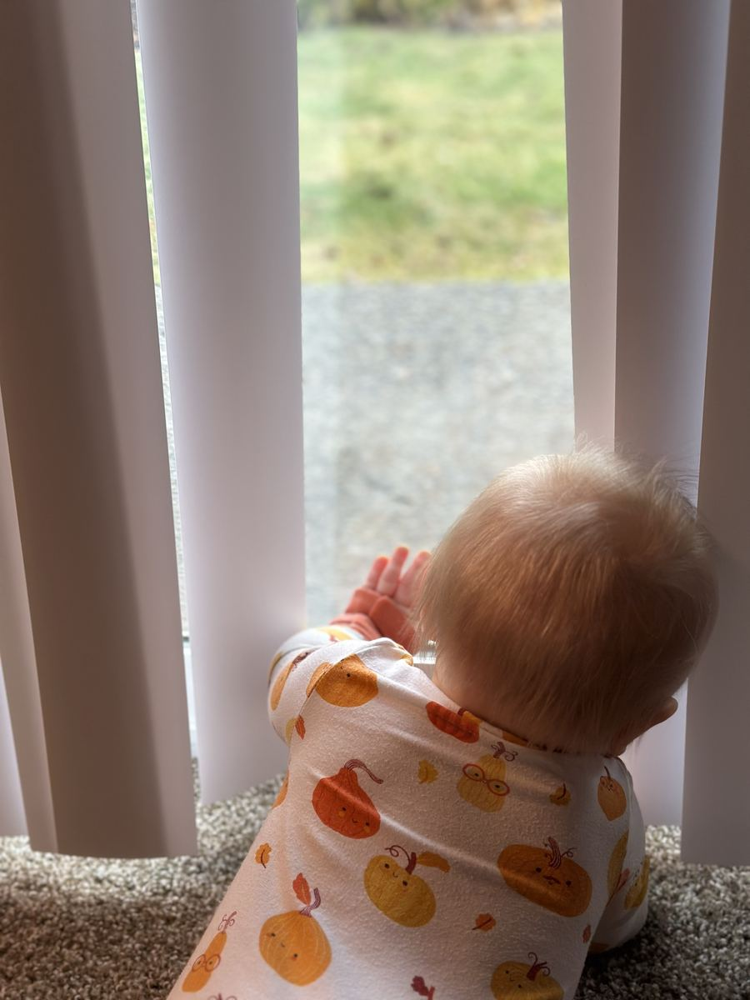

Every mama has been there: frantically Googling "is it normal that my 4-month-old isn't rolling yet?" at midnight. Milestones are exciting and terrifying in equal measure, and the internet does not help by giving you every possible answer from "totally normal" to "see a specialist immediately."
This guide is designed to give you real, grounded, practical information about what to expect in your baby's first year, with the reassurance that development is a range, not a race.
💡 The Most Important Thing to Know
Milestone ranges are wide on purpose. A baby who rolls at 3 months and a baby who rolls at 5 months can both be completely typical. What matters most is that your baby is making progress over time, not hitting exact dates.

Months 1–2: Hello, World 🌎
In the first two months, your baby is busy just adjusting to life outside the womb. Don't expect a lot of "doing", this is a sensory and neurological explosion happening behind the scenes.
Typical milestones:
- Focuses on faces within 8–12 inches (your face is basically their whole world right now)
- Responds to loud sounds (startle reflex)
- Makes brief eye contact
- Brings hands to face
- Makes soft cooing sounds by week 6–8
- The first social smile typically appears between 6–8 weeks, and mama, when it happens, your whole heart will explode
Tummy time: Start from day one with short sessions (1–2 minutes) several times daily. Tummy time is critical for neck and core strength. Baby will hate it at first, that's normal.
Months 3–4: The Awakening 🌸
Something magical happens around 3 months. Your baby starts to feel less like a tiny, needs-based creature and more like an actual little person. They're awake more, more interactive, and way more fun.
- Follows objects and faces with eyes (tracking)
- Holds head steady when upright
- Opens and closes hands intentionally
- Reaches for hanging toys
- Brings objects to mouth (everything is a teether now)
- Laughs! (usually around 4 months, one of life's great joys)
- May begin rolling tummy to back (front-to-back comes first)
Head's up: Around 4 months you may hit the dreaded 4-month sleep regression, this is a developmental leap, not a step backward. Your baby's sleep cycles are permanently changing. Hang in there.
Months 5–6: Getting Physical 💪
Now things start getting physical. Your baby is building the strength and coordination that will eventually lead to sitting, crawling, and walking.
- Full rolling both ways (typically mastered by 6 months)
- Sits with support, and briefly without support (around 6 months)
- Transfers objects hand-to-hand
- Bangs objects together
- Recognizes familiar faces and may show stranger anxiety
- Babbling begins, "ba ba," "da da," "ma ma" sounds (though not purposeful yet)
- Ready to begin solid foods around 6 months (look for signs of readiness: sitting supported, head control, interest in food)
Months 7–9: On the Move 🚀
This is where the fun, and the chaos, really begins. Babyproofing is now urgent, not optional.
- Sits without support confidently
- Crawls (though some babies skip crawling entirely and go straight to walking, both are fine)
- Pulls up to stand on furniture
- "Cruises" (walks sideways while holding furniture)
- Pincer grasp develops (picking up small objects with thumb and finger)
- Object permanence kicks in, they KNOW you left the room, hence the separation anxiety
- Waves bye-bye and plays peek-a-boo
- Understands "no" (but doesn't necessarily listen to it, age-appropriate!)
"Comparing your baby's milestones to your friend's baby is like comparing apples to oranges to avocados. They're all fruit. They all ripen in their own time."
Months 10–12: Almost a Toddler 🎉
Your tiny newborn is now almost a toddler. How did that happen?
- Stands alone briefly (may happen between 9–12 months)
- First steps! (typically between 9–12 months, though walking by 15 months is perfectly normal)
- Says first true words, usually "mama," "dada," and one or two others by 12 months
- Points at objects and people
- Follows simple one-step directions ("give me the ball")
- Imitates actions (clapping, waving)
- Drinks from a sippy cup
- Feeds self finger foods confidently
When Should I Be Concerned?
While development varies widely, there are some signs that are worth discussing with your pediatrician. This isn't a reason to panic, early evaluation is always helpful regardless of outcome:
- By 2 months: Not responding to loud sounds, not watching things move, not smiling at people
- By 4 months: Not making sounds, not reaching for objects, still has very stiff muscles or very "floppy" muscle tone
- By 6 months: No laughter or squealing, no babbling, doesn't try to reach things
- By 9 months: No babbling, doesn't recognize own name, not playing back-and-forth games like peek-a-boo
- By 12 months: No words (even one), no gesturing (waving, pointing), not crawling or pulling to stand
Any time you lose a skill your baby previously had, that's worth mentioning to your doctor promptly.
💡 Your Gut Matters
Pediatricians will always tell you this: you know your baby better than anyone. If something feels "off," bring it up. It is never an overreaction to ask questions. A good doctor will never make you feel silly for checking.
How to Support Your Baby's Development Every Day
You don't need expensive toys or structured "lessons." Here's what actually works:
- Talk constantly, narrate what you're doing ("Now I'm putting on your sock, one sock, two socks"). Language exposure drives brain development.
- Read together, even at 3 months, pointing at pictures and reading aloud is building language pathways.
- Tummy time daily, never stop, even after rolling is mastered.
- Respond to their cues, when baby babbles, babble back. These "conversations" teach turn-taking and build language circuits.
- Limit screens, the AAP recommends avoiding screens (except video calls) for children under 18 months.
- Play on the floor, the floor is the best developmental gym you have.
The Bottom Line
Your baby is on their own timeline, one that's been written in their unique DNA, shaped by their environment, and unfolding exactly as it should. The milestones are guideposts, not finish lines. Celebrate each one when it comes, enjoy the journey between them, and trust that you are giving your baby everything they need simply by showing up, every single day, with love.
You're doing beautifully, mama. 💛
This article is for informational purposes only. Consult your pediatrician for personalized guidance on your child's development.
Frequently Asked Questions About Baby Milestones
What is the most important milestone in the first year?
All milestones matter, but pediatricians pay particularly close attention to social-emotional milestones, like the social smile at 2 months and responsive communication at 9 months, because these are early indicators of healthy neurological development. Motor delays can often be addressed with physical therapy, but social-communication delays benefit most from early identification and intervention.
My baby skipped crawling and went straight to walking. Is that okay?
Yes, completely normal. About 10% of babies skip crawling altogether and go directly to cruising and walking. Crawling isn't a required milestone, some babies scoot, roll, or use other methods to get around. As long as your baby is meeting other milestones and your pediatrician has no concerns, skipping crawling is not a red flag.
How can I tell the difference between a milestone delay and a developmental disorder?
This is a question for your pediatrician, who uses standardized screening tools at well-child visits to assess development across multiple domains. A single delayed milestone is usually not cause for alarm, but delays across multiple areas, or losses of previously acquired skills, warrant prompt evaluation. The CDC's "Learn the Signs, Act Early" program has excellent free resources for parents.
Do premature babies reach milestones later?
Yes, premature babies are assessed using their "adjusted age" (also called corrected age), which counts from their due date rather than their birth date. A baby born 8 weeks early would be evaluated against milestones 8 weeks behind their actual calendar age. Most premature babies reach typical milestones by age 2, though some may need additional support.